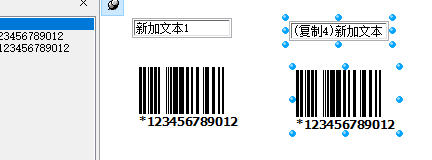

【非常见问题杂笔记】一张纸两列标签，重启c-lodop后正常等
1.相同的内容输出2列，请问怎么设置？（两个标签）直接在纸张上进行定位，两列，左边距不同。
加载多个打印项，
和左侧的打印项一样，顶边距和左侧的一样，左边距根据需要设置合适的值，那些打印项定位到左侧。

如果是在打印设计中设计模版，选中多个打印项，按住ctrl拖动可复制。
2.提示：Paper size(W:0 H:0)invalid!
去掉纸张语句测试下，有的打印机不支持设置的该自定义纸张。
修改纸张语句参数，或用虚拟打印机试试。
是的，去掉这句SET_PRINT_PAGESIZE测试下。
或修改纸张宽高为A4的尺寸试试，不用0,0这个参数。
1.去掉SET_PRINT_PAGESIZE纸张语句，测试对比下。
2.修改纸张语句参数，直到不报错。
例如：LODOP.SET_PRINT_PAGESIZE(1, 0, 0, "A4");
试试中间的宽高不用0,0,设置成具体的宽高值。
修改纸张参数，直到这个打印机不报错，
或去掉纸张语句 ，改用其他纸张控制方法http://www.c-lodop.com/blogs/Blog002.htm。
（改进了下这个常见问答回复，在迷你问答里增加新的回答组合）
3.提示“WebSocket没准备好”、打印插件重启一下，然后又可以了
参考http://www.c-lodop.com/faq/pp3.html
不能打印后，参考测试样例2：http://www.c-lodop.com/demolist/PrintSample2.html，点样例2的预览试试。
不能打印后，访问http://localhost:8000/c_sysmessage，查看clodop出错信息
只能出问题的时候进行测试。
c-lodop重启后正常，可能和c-lodop运行等有关，需要查看下报错信息http://localhost:8000/c_sysmessage
并参考http://www.c-lodop.com/faq/pp5.html
排查开机启动项，用管理员权限安装最新版http://www.c-lodop.com/download.html，右键以管理员权限运行，再对比试试。
排查c-lodop是否能开机自启动，默认情况c-lodop是开机自动启动的，没自动开启可能问题：
1. 在系统msconfig启动选项列查看c-lodop是否是开启自启动；
2. 当前操作用户权限不足，无系统管理员权限；
3. 注意安全软件禁用c-lodop. 目前常用的360及金山已进行了安全认证，其他的杀毒软件请加入白名单，或直接上报提交对应的杀毒软件服务器。
c-lodop重启后正常，可能和c-lodop运行等有关，需要查看下报错信息http://localhost:8000/c_sysmessage
先查看下报错信息是怎样的，是否是权限问题等。
（很多人说出各种问题，c-lodop重启后就可以了，但是具体的问题还是要看报错信息，这个应该整个问答分类组合，之后有空整理一下：重启c-lodop后正常）
4.预览时显示图片，打不打印
用xps或pdf虚拟打印机输出测试下。
用xps或pdf虚拟打印机输出测试下。 查看虚拟打印机的输出效果。
如果虚拟打印机正常，真实打印机预览也正常，预览是打印的反显，重装打印机驱动等，排查打印机或打印机驱动相关问题。
（这个应该整个回答组合，虽然之前有，但是有很多其他回答等，查找还是有点麻烦，还不如打字快，整理一下：虚拟打印机正常，真实打印机预览正常，打印出问题，该问题解释汇总。）
5.控件怎么设置有的文本，只预览时显示但实际不打印到纸上

设置该打印项只预览不打印
LODOP.SET_PRINT_STYLEA(0,"PreviewOnly",1);
6.前几张正常。后面再打印排版格式就乱了是什么问题
前几张和后几张，是一个任务里多页。
还是多个任务。
单独预览或输出后几张的任务试试。
是否和后几张的内容或样式有关。
发一下预览截图，指明一下样式错乱的地方
进入lodop的的打印预览，查看下预览是否正常
7.提示Printer selected is not valid
参考http://www.c-lodop.com/faq/pp1.html
测试官网样例http://www.c-lodop.com/demolist/PrintSample2.html
样例2是否正常。
8.能否获取到打印纸张页数
参考样例22http://www.c-lodop.com/demolist/PrintSample22.html
预览或打印后获取
9.打印插件是否支持打印图片，在打印预览时图片无法显示。
支持，参考http://www.c-lodop.com/demolist/PrintSample8.html
（1）查看lodop内部解析的html信息，见http://www.c-lodop.com/faq/pp8.html
查看一下传入的图片路径是否正确，尽量用绝对路径地址，换个图片试试。
（2）显示空白或者图片缺失等问题，加延迟试试：
LODOP.SET_PRINT_STYLEA(0,"HtmWaitMilSecs",1000)//设置上一项延迟超文本下载1000毫秒
（3）权限问题，图片显示叉号 说明服务端拒绝了 可能证书 session等问题，导致没有直接访问该图片的权限，有些需要验证之后才能访问图片。由于Lodop借用IE下载引擎，与非IE浏览器之间目前不能传递Session(cookies)
（4）清空ie缓存 重置ie 后在ie中查看下。IE中的URL最大长度限制为2048字节。超过这个长度会不支持。
（5） 查看服务器端错误日志排查下 。
（6）做个简单的例子验证下，排除其他因素的干扰。Base64输出图片参考样例38。
10.打开文件安全警告，无法验证发布者，你确定要运行此软件吗
百度下，无法验证发布者 您确定要运行此软件吗，可以设置windows不再提示。
这个是windows提示，百度下这个提示。
安全限制较高的时候会提示。
11.有一个用户在使用我们的打印时候带出了水印，但是其他人用同样的功能就没事
参考排查一下http://www.c-lodop.com/faq/ph01.html
如果是ip或域名，
访问的是否是注册的ip或域名，浏览器地址栏输入的是否是注册的ip或域名，
（1）.单独注册服务器ip地址，登陆访问方式是ip地址访问，例如：注册ip地址：192.168.0.1，登陆方式如下
：http：//192.168.0.1:8000/index.jsp等，域名访问时，注册信息无效。
（2）.单独注册域名：登陆访问方式是域名地址访问，例如：注册域名： www.c-lodop.com 登陆方式如下
：http://www.c-lodop.com/index.html等，ip地址访问时，注册信息无效
参考排查一下http://www.c-lodop.com/faq/ph01.html
逐条排查下链接里的条目，特别是里面个别电脑出现水印的情况的条目。
清理下浏览器缓存试试。
是什么类型的注册号，如果是ip或域名的，是否访问的是注册的ip或域名
公司名注册，不限ip域名，在该客户端做个简单例子测试下。
进入打印预览，查看预览下方状态栏是否显示公司名
12.注册码放在哪个地方
参考收注册号邮箱里的说明
以用写在每个打印方法里，每次打印的时候都要执行，也可以放在链接里的LodopFuncs.js标注处，每次调用LODOP的时候统一调用。
可以，只要每次打印时调用到就可以。
关于按钮没隐藏，没有成功。
参考排查一下http://www.c-lodop.com/faq/ph01.html
先确保该注册语句执行了，每个打印方法里都要执行。
可以先做个简单例子测试下，
例如：
LODOP.PRINT_INIT("打印任务名");
LODOP.ADD_PRINT_TEXT(0,0,100,20,"文本内容一");
LODOP.SET_LICENSES........
LODOP.PRINT();
直接放到PRINT()语句前面测试下。
13.能把公司另外一位同事邀请进来吗？
可以，邀请加入，或申请加入，申请加入输入验证问题 验证通过后可加入。
（这个也常见问，整理一下，在分类小问答中，临时打字不如整理好的语句组织较好）
14.纸张尺寸和我们系统设置的不一样怎么处理
纸张设置，参考样例5 http://www.c-lodop.com/demolist/PrintSample5.html
用xps或pdf虚拟打印机测试一下（测试可用样例5），如果虚拟打印机输出的是正确的纸张，真实打印机不是，可能是打印机不支持该自定义纸张。 选择该真实打印机，在打印预览下方状态栏查看一下纸张大小，有的打印机不支持该自定义纸张。
和打印机有关
用xps或pdf虚拟打印机测试下，
win7以后系统自带Microsoft XPS Document Writer虚拟打印机或者 下载安装群文件里的Doro PDF Writer虚拟打印机
纸张设置，参考样例5 http://www.c-lodop.com/demolist/PrintSample5.html
用xps或pdf虚拟打印机测试一下（测试可用样例5），如果虚拟打印机输出的是正确的纸张，真实打印机不是，可能是打印机不支持该自定义纸张。 选择该真实打印机，在打印预览下方状态栏查看一下纸张大小，有的打印机不支持该自定义纸张。
15.lodop有安卓APP 的打印方案吗？
目前lodop和c-lodop只能安装到windows操作系统上，其他操作系统无法安装，无法用客户端本地打印角色，其他操作系统可以用集中打印，或广域网打印角色。
三种角色及使用方法 参考http://www.c-lodop.com/demolist/t1.html
安卓版目前不支持，可用后两种角色打印到其他windows电脑上。
16.虚拟打印机看起来是好的，但是最后打印出来还是那个样子文字重叠
用虚拟打印机输出测试下，查看虚拟打印机的输出效果。
用xps或pdf虚拟打印机输出测试下，
win7以后系统自带Microsoft XPS Document Writer虚拟打印机或者 下载安装群文件里的Doro PDF Writer虚拟打印机
理论上本机虚拟打印没问题的话，说明插件代码没问题，程序可做的努力就的确很少了，毕竟windows下的打印是微软倡导的设备无关系原则，要在打印机和打印驱动程序 系统上排查下，尝试重装驱动 或者 打印机不支持一些功能 打印机精度太低。
17.有台机器突然连不上clodop端口了，什么原因会造成？
https的网站吗
进入欢迎页面http://localhost:8000试试
并查看下当前启动的端口（图示）
进入欢迎页面http://localhost:8000试试
查看欢迎页面是否能正常访问，欢迎页面下方的打印机列表是否可以正常显示
安装启动成功界面可以打开吗
截图下端口界面是否正常。
参考http://www.c-lodop.com/faq/pp5.html
排查下里面的条目，是否是localhost无法访问问题。
最新版4104有32位的，在发行包里。
18.虚拟打印机是正常的，但是打印出来不清晰的，同一台打印机，另一台电脑清晰
用xps或pdf虚拟打印机输出测试下，
win7以后系统自带Microsoft XPS Document Writer虚拟打印机或者 下载安装群文件里的Doro PDF Writer虚拟打印机
用的是什么语句的，是add_print_htm吗，这个输出的是解析后的超文本。
add_print_htm输出的是解析后的超文本，这个应该是清晰的。
理论上本机虚拟打印没问题的话，说明插件代码没问题，程序可做的努力就的确很少了，毕竟windows下的打印是微软倡导的设备无关系原则，要在打印机和打印驱动程序 系统上排查下，尝试重装驱动 或者 打印机不支持一些功能 打印机精度太低。
重装下有问题电脑上的打印机驱动试试。
19.按照纸张的实际大小210mm*140mm设置打印，打印出来的这样的
进入打印预览查看下，预览下方状态栏纸张是否和设置的纸张一致。
纸张设置，参考样例5 http://www.c-lodop.com/demolist/PrintSample5.html
用xps或pdf虚拟打印机测试一下（测试可用样例5），如果虚拟打印机输出的是正确的纸张，真实打印机不是，可能是打印机不支持该自定义纸张。 选择该真实打印机，在打印预览下方状态栏查看一下纸张大小，有的打印机不支持该自定义纸张。
用xps或pdf虚拟打印机测试一下（测试可用样例5），如果虚拟打印机输出的是正确的纸张，真实打印机不是，可能是打印机不支持该自定义纸张。
有的扁平的纸张虚拟打印机也不支持。
20.条码字符数超过12个字符时打印正常。条码字符数不超过12个字符时打印条码宽度会超出标签纸。
参考http://www.c-lodop.com/faq/pp10.html 条码随着数值不同，宽度可能不同，无法做到完全统一大小，可估计最大宽度，最后的实际宽度一般是小于等于设定宽度。
目前没有很好的方法，条码数值不同，宽度也会不同。
21.字体错乱
用xps或pdf虚拟打印机输出测试下，
win7以后系统自带Microsoft XPS Document Writer虚拟打印机或者 下载安装群文件里的Doro PDF Writer虚拟打印机
虚拟打印机打印出来也是错乱的吗
用css样式指定下具体的字体样式试试，比如宋体。
理论上本机虚拟打印没问题的话，说明插件代码没问题，程序可做的努力就的确很少了，毕竟windows下的打印是微软倡导的设备无关系原则，要在打印机和打印驱动程序 系统上排查下，尝试重装驱动 或者 打印机不支持一些功能 打印机精度太低。
虚拟的打印机正常，和打印机有关，重装打印机驱动试试。
需要在有问题的机器上用虚拟打印机测试，预览是打印机的反显，虚拟打印机和真实打印机预览效果可能会不一致。
虚拟打印机正常，就是和打印机或打印机驱动有关了。
22.可以批量静默打印pdf文件吗
可以分页也可以分任务，pdf如果本身有多页，用NEWPAGEA，http://www.c-lodop.com/faq/pp19.html
或分成多任务也可以，连续输出多任务。
分页分任务，参考样例26
23.我想修改这个字的字体怎么弄？
打印项是什么语句输出的，是add_print_text纯文本，还是add_print_htm超文本
字体设置方法： 一、整体设置（针对文本项），打印初始化后、增加打印项之前调用本函数
LODOP.SET_PRINT_STYLE("FontSize",11);
二、单个打印项（针对文本项）进行字体设置，例如：
LODOP.SET_PRINT_STYLEA(3,"FontName","隶书"); 设置第3个内容项的字体为隶书。
LODOP.SET_PRINT_STYLEA(3,"FontSize",15);
设置第3个内容项字体为15号字体
单独设置某个打印项的字体，可以参考样例3。
一、二、是对所有内容字体的设置，只对文本项起作用，超文本不起作用。css样式参见样例10.
另外：超文本方式输出字体时，此时最好用pt这个单位设置字体大小，不要用px，否则会受打印分辨率影响。px是相对计量单位，显示屏幕上12点和打印机上的12点可能不一样大。但都用9pt就差不多大了，9pt在打印机上或许是11px或12px。套打最好不要用htm语句，要用add_print_text语句。不设置就会被浏览器引擎设置为默认字体，默认字体大小是9号字体。
一、二、是对所有内容字体的设置，只对文本项起作用，超文本不起作用。css样式参见样例10.
查看lodop内部解析的html信息，见http://www.c-lodop.com/faq/pp8.html
排查样式是否传入了，样式是否正常。
24.ADD_PRINT_BARCODE，这个方法生成的二维码，扫出来的为什么是一串字符串呢
变量替换成具体参数，发一下这个语句。
如果是指乱码，参考：
更改其他编码试试：
例如：LODOP.SET_PRINT_STYLEA(0,"DataCharset","UTF-8");
也可以在打印设计里修改，生成代码，
打印设计——选中该条码打印项——右键属性——条码属性——下方修改编码
ADD_PRINT_BARCODE(0,0,94,94,'QRCode','https://www.baidu.com/')
这边测试是可以的，是否微信有安全设置等，这边测试可以跳转到百度页面
扫一下我发的这个试试，这个我用微信扫描是可以的。
25.怎么知道有没有打印成功
参考样例35 http://www.c-lodop.com/demolist/PrintSample35.html
样例45的13 http://www.c-lodop.com/demolist/PrintSample45.html
样例35返回的“打印成功”实际仅是成功加入后台队列。
样例45的13 判断“JOB不在队列”就足可认定已经打印成功。
一般建议使用样例4，35方法简单判断打印成功，发送打印指令加入打印机队列算打印成功。
参考样例35，右键查看源码，如果是c-lodop，需要用回调函数。
参考样例35 http://www.c-lodop.com/demolist/PrintSample35.html
样例右键，查看源码
参考样例源码和c-lodop技术手册
26.打印模板取值 含有双引号 转义之后最后打印前还是转成双引号报错.
打印项是什么语句输出的，是add_print_text纯文本，还是add_print_htm超文本
内容是拼接的字符串吗，查看下最后拼接的内容是否正确，发一下这个纯文本代码。
是英文双引号还是中文的，LODOP.ADD_PRINT_TEXT(17,62,202,26,"“”\"\"");
排查参数里字符串内容是否正常。
是英文的双引号吗，加转义字符。
LODOP.ADD_PRINT_TEXT(17,62,202,26,"39,86,263,17,\"906\"5215\"");
需要的参数值效果是怎样的，是中间一个双引号吗
可以，这样里面的那一个双引号是转义的。
前后的两个包裹的这个字符串。
27.3.093.支持到chrome的哪个版本？chrome版本，跟clodop版本对应表有？
参考http://blog.sina.com.cn/s/blog_721e77e50102z33a.html
安装最新版c-lodop的4101或之后的版本，并参考链接修改JS地址。
如果是http的，两个版本都可以支持所有chrome版本。
如果是https的网站，3.0的版本，和4104之后的是不同的地址。谷歌84可能会提示原来的https地址不安全，需要根据上面的链接进行修改并安装4101之后的版本
是http网站还是https，
如果是http的，
3.0和4.101之后的，都支持所有chrome版本
28.我获得该打印的JOB代码，为什么是 ok
测试下样例45http://www.c-lodop.com/demolist/PrintSample45.html
选择打印机，参考样例5、7
http://www.c-lodop.com/demolist/PrintSample5.html
http://www.c-lodop.com/demolist/PrintSample7.html
打印机优先级，参考http://www.c-lodop.com/blogs/Blog002.html
指定打印机，参考样例7
指定打印机语句放在init初始化之后，打印之前。
可以用样例7的语句指定。例如SET_PRINTER_INDEX
参考样例45的说明
该任务的JOB代码（打印机序号和JOB序号组成）
指定打印机语句用的是样例7的那种吗，例如SET_PRINTER_INDEX
该任务的JOB代码（打印机序号和JOB序号组成）。
执行该语句之后，PRINT指令不再返回那个所谓“打印成功”，而是该任务的JOB代码（打印机序号和JOB序号组成）。
有了该JOB代码，可以用GET_VALUE("PRINT_STATUS_XXX","JOB代码值")语句获得打印状态信息及最终结果。
这个是job代码。
可以根据该job代码获取样例45的这个任务的一些其他信息。
样例45的这个表格是状态码，不是job代码。
样例45的第四步是获取状态码，可根据job代码获取状态码。
29. WIN10系统安装旧版的没有效果。一直提示未安装
http网站，还是https的，用的是什么浏览器版本多少
参考http://blog.sina.com.cn/s/blog_721e77e50102z33a.html
安装最新版c-lodop的4101或之后的版本，并参考链接修改JS地址。
30.设计有tr线条。预览就没有？
是超文本吗，排查样式
查看lodop内部解析的html信息，见http://www.c-lodop.com/faq/pp8.html
分析差异点，因浏览器版本不同遵循的html标准不同，造成某些标签属性显示有差异，尽量避免使用有差异的属性，可以在ie下不同版本仿真情况下验证差异 排查样式，尽量使用使用各浏览器无歧义的通用的 html css js，不支持的样式可尝试用其他样式代替。
排查下样式http://www.c-lodop.com/faq/pp8.html，通过删减或做简单例子排查，找到出问题的样式，修改样式。
发一下这个代码，文本形式，这边测试下。
Lodop是基于本机windows底层引擎进行渲染解析的，与ie调用的引擎一致。
或换用其他实现方式。
这边测试有线条，和本机解析引擎有关。，odop是基于本机windows底层引擎进行渲染解析的，与ie调用的引擎一致。在样式有问题所在电脑上，尝试重置ie，升级ie，
或排查下样式http://www.c-lodop.com/faq/pp8.html，通过删减或做简单例子排查，找到出问题的样式，修改样式。
换用其他样式方式实现，或用add_print_htm测试下。
直接放在td里测试下
样式直接放在td里测试下，不要放在tr里。
31.上面边距比较大，有办法调整吗？
进入打印预览查看下效果
如果预览的是当前打印的真实打印机的，预览是打印机的反显，预览和打印不一致，重装打印机驱动，或咨询下打印机客服。
或参考http://www.c-lodop.com/faq/pp17.html
打印维护设置整体向上偏移试试，试试上方区域是否能打到。
咨询下打印机客服试试，是否打印机初始位置等造成的。
如果预览正常，打印不一致，一般和打印机或打印机驱动有关。
32.在edge上,打印不了
在edge上测试下官网样例试试，http://www.c-lodop.com/demolist/PrintSample2.html
样例是否有什么提示
进入欢迎页面http://localhost:8000，点欢迎页面的预览试试
点欢迎页面的预览试试
欢迎页面下方选择个正常的打印机，预览试试。
并用最新版4104试试。
安装32位的c-lodop就可以，32位c-lodop支持32和64位操作系统。
欢迎页面正常，说明安装启动正常，调试js ，对照欢迎页面排查下代码。查看是否js有报错内容。
参考http://www.c-lodop.com/faq/pp3.html 新版修改了该提示，是同一问题，参考链接里的方法。
3. edge浏览器，正常情况下访问web服务没有问题，访问本地超文本文件打印时会提示"C-Lodop未准备好"，原因：edge作为Windows应用程序与IE不同，因此出于安全考虑默认是网络隔离。为了解决这个问题，我们需要使用cmd命令修改安全策略来解决。
解除edge浏览器对127.0.0.1的隔离就好了。
33.base64 必须用 ADD_PRINT_IMAGE 来输出图片吗
可以直接输出base64，样例38那种不加img标签的，不经过浏览器解析，lodop直接输出。
当浏览器(如IE6、IE7)不支持BASE64图片时，
可把图片编码直接送给ADD_PRINT_IMAGE输出图片,浏览器不支持base64，只能用样例38直接输出base64方法。
lodop是基于本机windows底层引擎进行渲染解析的，与ie调用的引擎一致。
如果解析超文本的浏览器支持，可以使用。
34.换页的时候表格上面的边框不见了 怎么解决呢
table标签里是否加了border=1，table标签加border样式，会自动补线。
参考样例30,43等http://www.c-lodop.com/demolist/PrintSample43.html
（迷你问答有，因为在开电子发票，随手打字回复了下，感觉不如复制迷你问答里的回答好）
35.点击生成报告按钮，一次性生成3份病人报告。三个pdf文档
不支持直接导出pdf文件，可以借助pdf虚拟打印机输出为pdf文件。
借助pdf虚拟打印机的pdf文件是一个任务的。
可以三张放一个任务里，也可以分三个任务，输出成3个pdf文件。
弹出对话框保存是pdf虚拟打印机的功能，百度下是否有不弹框的pdf虚拟打印机试试。
36.如何在分页后 还加上标题？
需要每页输出的打印项设置为页眉页脚项
LODOP.SET_PRINT_STYLEA(0,"ItemType",1);//设置上面的为页眉页脚，每页固定位置输出
例如样例6里的标题，http://www.c-lodop.com/demolist/PrintSample6.html
只能用不同的打印项。
指定输出到哪页，参考http://www.c-lodop.com/demolist/PrintSample25.html
第一页的标题输出到第一页，第二页的标题输出到第二页。
如果是手动分页，可以当作每页的普通项对待。
37.LODOP.ADD_PRINT_IMAGE，如何才能保证分页中每页都显示
需要每页输出的打印项设置为页眉页脚项
LODOP.SET_PRINT_STYLEA(0,"ItemType",1);//设置上面的为页眉页脚，每页固定位置输出
这个图片是需要每页显示吗，这个页眉页脚项是控制每页固定位置显示的。
这个样式控制每页固定位置输出，直接顶边距左边距在纸张中进行定位，一个任务可以设置多个每页输出的打印项。
ADD_PRINT_IMAGE
LODOP.SET_PRINT_STYLEA(0,"ItemType",1);/
这个图片就会每页固定位置输出
如果是指图片的顶边距和左边距，是ADD_PRINT_IMAGE的一二参数。
排查是否有打印项重叠了
发一下代码
页眉页脚会每页固定位置输出，排查是否页面上有其他打印项存在再页眉页脚的位置，导致重叠了。
图片设置页眉页脚，去掉关联。
页眉页脚是每页固定位置输出
排查里面的关联项序号是否正确，是否关联的是所需要的内容。
后面的这个关联了前面的图片，图片和后面的都是页眉页脚项，都去掉关联测试下。
一个任务可以有多个页眉页脚项。
底部的那个是需要关联图片打印项吗，-1代表前一个打印项，就是那个图片打印项，那个图片打印项设置为页眉页脚了。
排查自己的代码关联的打印项是否是需要的的打印项。
不要关联页眉页脚项。
页眉页脚适合每页固定位置输出的
关联适合位置不固定，根据内容变化的，
根据需要用一个试试。
去掉关联，只保留页眉页脚项的这个设置。
会每页固定位置输出。
页眉页脚项本身就是每页固定位置输出，去掉关联测试下，查看是否每页固定位置输出了。
普通项目每页添加新的打印项。
页眉页脚只适合每页固定内容固定位置输出的。
之前不是说的每页的内容是不同的吗
每页固定内容输出，可以设置为页眉页脚项，去掉关联就可以。该任务中每页都会输出。
需要每页输出的打印项，打印项内容是否是相同的
中间的是普通项自动分页，
头尾设置为为页眉页脚项，二维码图片如果也是固定位置固定内容输出，也设置为页眉页脚项。
二维码只设置页眉页脚项，不要设置设置关联。
一个任务中固定位置输出，只用页眉页脚项就行了。
新加打印项后，注意之前关联的序号。
下面这个打印项关联-1是关联的这个图片。
如果不是需要关联图片，排查关联序号是否正常。
-2关联的是另一个页眉页脚项，排查关联是否正常。
参考样例43，一般都是关联一个不是页眉页脚的普通项，比如中间分页的表格。
38.使用PRINT执行，会偶尔出现内容被覆盖的情况，这是什么原因
调试JS，排查下第四份传入的打印项参数变量值等是否正常。
并用最新版测试下，4104。
也可能是前面的任务执行太快，后面的任务追上去了。
用最新版测试下http://www.c-lodop.com/download.html
39.将字体变小，然后打印了10分，为什么只有第一份和最后一份是字体变小了，其他的都是 原字体大小
10份是怎样控制的，是打印份数吗，SET_PRINT_COPIES
这个打印份数应该是同样的内容打印10份。
用虚拟打印机输出测试下。
40.用虚机打印 不会丢单。但是我用打印机打 会丢单
是丢任务吗，打印机脱机，查看下队列的状况。
重装下打印机驱动试试。
丢其中的页数吗
查看下打印机队列的页数是否正常。
虚拟打印机和真实打印机预览这个任务查看下。
查看下预览分页的页数是否相同。
用xps或pdf虚拟打印机测试下，
win7以后系统自带Microsoft XPS Document Writer虚拟打印机或者 下载安装群文件里的Doro PDF Writer虚拟打印机
41.什么是D型云注册号
三种角色及使用方法：
参考http://www.c-lodop.com/demolist/t1.html
后两种角色的D注册
可以打到其他windows电脑上，参考链接里的后两种角色。
不支持mac第一种角色本地打印。
参考后两种角色，实际打印端是在windows电脑上，c-lodop安装到windows上。
42.lodop二维码被html覆盖 如何解决
后输出二维码打印项，后输出的打印项在上层，调整下打印项顺序试试。
二维码是一个单独打印项输出的吗，样例11那种http://www.c-lodop.com/demolist/PrintSample11.html
展开左侧的打印项列表，查该二维码打印项是否在最后输出
二维码是个图片吗
单独输出该图片测试下
是否加了其他样式，比如关联等样式。
关联等样式会影响打印项的位置。
如果是固定位置输出，可以去掉关联测试下。
关联的是这个table表格吗
关联后top值就是偏移值了，580这个偏移top值是否是需要的值。
做个简单的能还原问题的例子，数值都用具体数值，发过来，这边测试下。
这个图片关联表格，top值是580，是需要在表格下方580处显示吗
中间的表格是否有分页，分页后，会在表格 最后的下方580处输出。
关联，参考http://www.c-lodop.com/demolist/PrintSample41.html
一个内容关联别人后，其Top值不再是上边距，而是与被关联者的间隙距离,Left值也变为左边距相对偏离量。
如果是图片关联表格，top设置580，就是相对表格下方偏移580的位置，排查写法是否正确。
去掉关联测试下，看上去是固定位置输出。
做个简单例子，发过来，这边测试下。
确定一下，是指打印设计设置属性里的确定按钮吗
确定是指应用这个样式。
打印设计是辅助开发的，直接复制代码到页面代码里。
把参数改成具体值，做个简单例子发过来，这边测试下。
这个关联的不是表格，是一个页眉页脚项，写法是否正确。
表格的top值是固定的，如果想固定在表格的地方输出，可以不用关联，直接定位。
不能关联一个页眉页脚项。
页眉页脚项是固定输出的，如果相对于该页眉页脚项一个位置，可以直接在纸张中定位，不用关联。
关联适合比如表格高度不固定，需要在表格下方显示一些内容那种，内容的顶边距随着表格在纸张中位置不固定那种。
修改直接定位测试下。
样例43这种吗，不要关联页眉页脚项，可以关联表格。
是每页固定位置输出吗，参考样例43，设置页眉页脚不会根据表格位置变化。
新增的这个二维码不是在表格的上方吗，这个是需要每页输出吗，可以设置为页眉页脚项。
和样例43的标题一样，设置为页眉页脚项。
是指跟着表格输出吗，可以关联表格。
参考样例43的标题。
设置眉脚项会固定位置输出，查看下样例43的那个标题div。
是否是同样的代码，用的是同样的c-lodop版本。
xp中也是用的c-lodop吗，4104，预览左上角是小打印机图标的，说明当前走的是c-lodop方式。
把二维码用lodop语句输出试试，不用图片，参考样例11
43.不同电脑上打印，出现打印字体大小不一样的情况吗，程序里已经设定了系统大小16px
1.查看本机ie浏览器的缩放比例应在100%，
2.操作系统控制面板设置显示应在100%。
3.如果打印的是超文本，超文本内部css样式等尽量使用pt等绝对单位，不使用px等相对单位，避免分辨率的影响。
44.中文加英文，当宽度不够时，换行
加大打印项的高度，高度足够会换行
参考http://www.c-lodop.com/demolist/PrintSample6.html
SET_PRINT_STYLEA(0,"TextNeatRow",true);试试这个
参考http://www.c-lodop.com/demolist/PrintSample6.html
SET_PRINT_STYLEA(0,"TextNeatRow",true);试试这个
设置这个，并减小打印项高度，会隐藏后面的内容。
SET_PRINT_STYLEA(0,"TextNeatRow",true);试试这个
（允许标点溢出，且英文单词拆开），这个会允许拆分单词。
45.打印图片能根据调整框的大小，让图片自动随着框来适应么
缩放图片，参考图片 参考http://www.c-lodop.com/faq/pp14.html
可变形缩放。
46.请问这个打印预览中的公司名称能取消吗
不能，这个是授权的标志。
ip或域名注册没有这个公司名。
公司名称注册不限ip域名，必须显示这个。
或者给不要显示这个的项目，用ip或域名注册，可在购买的ip或域名下使用。